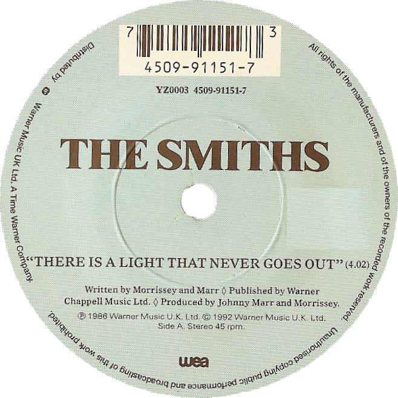

The Smiths began working on "There Is a Light That Never Goes Out" during its
late 1985 recording sessions at London's RAK Studios. In early September,
the band recorded a rehearsal tape of the song performed in the key of F# minor.
Four days later, the group made a monitor mix in the key of C# minor,
this time accompanied by a synthesised string arrangement Marr created on an E-mu Emulator
(credited to the "Hated Salford Ensemble" on the album release). While Morrissey was cynical about using synthesised strings,
the lack of a budget to hire a real string ensemble as well as the band's reluctance to allow outsiders into the recording process
changed his mind. The recording was completed in November at Jacobs Studios in Farnham, where Morrissey redid his vocal part twice
and Marr added a flute melody.
Music critics consider "There Is a Light That Never Goes Out"
to be one of the Smiths' finest efforts. Simon Goddard wrote,
"In a straw poll among Smiths fans today, 'There Is a Light That Never Goes Out'
would more than likely still come out victorious", which he credits to the "perfect balance" of
Marr's compositional skills and Morrissey's lyricism.